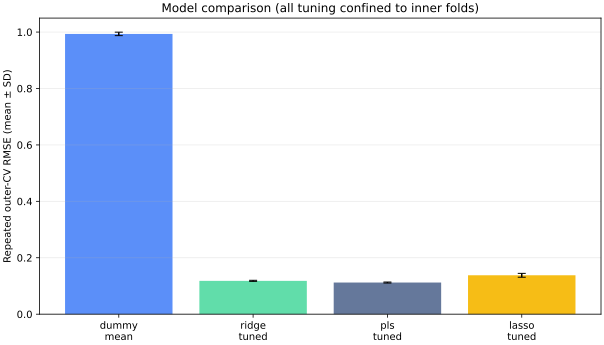

スペクトル前処理と特徴選択を交差検証フォールド内へ移し、情報漏洩を防止。
Moved spectral preprocessing and feature selection inside cross-validation folds to prevent leakage.
公開ケーススタディPublic case study
VNIRスペクトル回帰を、グループ分割・フォールド内前処理・予測区間まで含めて再設計した事例。
A redesigned VNIR spectral-regression workflow with grouped splits, fold-local preprocessing, and predictive intervals.
技術スタック / Tech Stack
00

01
スペクトル前処理と特徴選択を交差検証フォールド内へ移し、情報漏洩を防止。
Moved spectral preprocessing and feature selection inside cross-validation folds to prevent leakage.
52サイトの公開合成フィクスチャで、グループ分割を含む全工程を再実行可能。
A public synthetic 52-site fixture supports a clean rerun of the full grouped workflow.
複数回帰器の比較に加え、split conformal法による予測不確実性を実装。
Implemented split-conformal predictive uncertainty alongside comparison of multiple regressors.
02
高次元スペクトルから土壌有機物を予測する際のリークと過度に楽観的な評価を抑える。
Reduce leakage and overly optimistic evaluation when predicting soil organic matter from high-dimensional spectra.
Ridge、PLS、LASSOを、サイト単位のネスト交差検証とフォールド内前処理で比較する。
Compare Ridge, PLS, and LASSO with site-grouped nested cross-validation and fold-local preprocessing.
公開合成データで再現性を確認し、グループ外評価と適合型予測区間を用いる。
Validate reproducibility on public synthetic data using held-out groups and conformal prediction intervals.
実データを公開せずに、監査可能なモデリング手順と不確実性評価を提示。
Demonstrates an auditable modeling and uncertainty workflow without publishing the real dataset.
03
実データにはサイト・年・装置の十分なメタデータがなく、公開版の合成結果は圃場実装性能を示さない。
The real data lack sufficient site, year, and instrument metadata, and synthetic results do not establish field-deployment performance.
04
公開ケーススタディPublic case study
実データは非公開。公開ページの図表と数値はすべて合成フィクスチャ由来で、方法と検証手順のみを紹介する。
The real data remain private. Every public figure and number comes from a synthetic fixture and is used only to present the method and validation workflow.